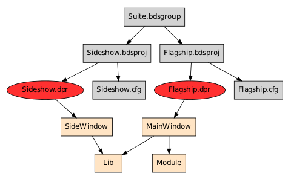

Orienting yourself in a huge legacy codebase can be a serious challenge in itself. A number of concrete questions come to mind:
A simple file listing is a logical place to start, but is soon too large to make sense of:
$ find treetest/ | sort
treetest/
treetest/Lib
treetest/Lib/Lib.pas
treetest/Src
treetest/Src/MainWindow.dfm
treetest/Src/MainWindow.pas
treetest/Src/Module.pas
treetest/Src/Project
treetest/Src/Project/Flagship.bdsproj
treetest/Src/Project/Flagship.bdsproj.local
treetest/Src/Project/Flagship.cfg
treetest/Src/Project/Flagship.dpr
treetest/Src/Project/Flagship.identcache
treetest/Src/Project/Flagship.res
treetest/Src/Project/Sideshow.bdsproj
treetest/Src/Project/Sideshow.bdsproj.local
treetest/Src/Project/Sideshow.cfg
treetest/Src/Project/Sideshow.dpr
treetest/Src/Project/Sideshow.identcache
treetest/Src/Project/Sideshow.res
treetest/Src/Project/Suite.bdsgroup
treetest/Src/Project/Suite.bdsgroup.local
treetest/Src/SideWindow.dfm
treetest/Src/SideWindow.pas
With the codebase explorer we can distill this down to a structured view, listing the files by order of importance to the overall codebase:
$ explore_codebase.py treetest/
DelphiProjectGroup:
- treetest/Src/Project/Suite.bdsgroup
DelphiProject:
- treetest/Src/Project/Flagship.bdsproj
- treetest/Src/Project/Sideshow.bdsproj
Program:
- treetest/Src/Project/Flagship.dpr
- treetest/Src/Project/Sideshow.dpr
But at this stage it is only a categorization of files by type. With the trace option we can take every build target and compute its graph, showing it as a tree:
$ explore_codebase.py treetest/ -t
Graphs:
= treetest/Src/Project/Suite.bdsgroup =
-- treetest/Src/Project/Sideshow.bdsproj
--- treetest/Src/Project/Sideshow.dpr
-- treetest/Src/Project/Flagship.bdsproj
--- treetest/Src/Project/Flagship.dpr
Here we can see that Sideshow.bdsproj and Flagship.bdsproj do indeed belong to
Suite.bdsgroup, thus when we list the program graphs we see
that this codebase contains only one graph, whose root is Suite.bdsgroup.
Once we know the root of the graph we can investigate further:
$ viewgraph.py treetest/Src/Project/Suite.bdsgroup

Let's start, as before, with a file listing:
$ find | wc -l
157
157 files, that's going to be painful to sift through. Let's try the explorer:
$ explore_codebase.py .
DelphiProjectGroup:
- ./bdstest/Apps.bdsgroup
- ./treetest/Src/Project/Suite.bdsgroup
DelphiProject:
- ./bdstest/Console.bdsproj
- ./bdstest/Gui.bdsproj
- ./mixedsrc/GimmeInts.bdsproj
- ./pcheck/PriceCheck.bdsproj
- ./pricecheck/PriceCheck.bdsproj
- ./treetest/Src/Project/Flagship.bdsproj
- ./treetest/Src/Project/Sideshow.bdsproj
Program:
- ./bdstest/Console.dpr
- ./bdstest/Gui.dpr
- ./casetest/Main.dpr
- ./codedgui/CodedGui.dpr
- ./commenttest/Comments.dpr
- ./cyclic/App.dpr
- ./dlltest/Main.dpr
- ./guid/Classed.dpr
- ./guid/ClsMeth.dpr
- ./guid/Main.dpr
- ./guid/Matching.dpr
- ./guid/TryAsm.dpr
- ./guitest/GuiTest.dpr
- ./mixedsrc/GimmeInts.dpr
- ./pathshadow/Main.dpr
- ./pcheck/PriceCheck.dpr
- ./pcheck/RunServer.dpr
- ./preproc/Root.dpr
- ./pricecheck/PriceCheck.dpr
- ./pricecheck/RunServer.dpr
- ./readxml/Trivial.dpr
- ./socket/RunClient.dpr
- ./socket/RunServer.dpr
- ./treetest/Src/Project/Flagship.dpr
- ./treetest/Src/Project/Sideshow.dpr
- ./trivial/Example.dpr
Library:
- ./dlltest/LibMax.dpr
- ./dlltest/LibMin.dpr
Quite informative, but it tells us nothing about the interdependencies.
From the previous example we already know that
treetest/Src/Project/Flagship.dpr belongs to
treetest/Src/Project/Flagship.bdsproj. What if we apply the same process and
subsume all the nodes in every program graph under the root? That should give
us a list of graphs, plus any files that don't belong to any graph.
$ explore_codebase.py . -t
Graphs:
= bdstest/Apps.bdsgroup =
-- bdstest/Gui.bdsproj
--- bdstest/Gui.dpr
-- bdstest/Console.bdsproj
--- bdstest/Console.dpr
= treetest/Src/Project/Suite.bdsgroup =
-- treetest/Src/Project/Sideshow.bdsproj
--- treetest/Src/Project/Sideshow.dpr
-- treetest/Src/Project/Flagship.bdsproj
--- treetest/Src/Project/Flagship.dpr
= mixedsrc/GimmeInts.bdsproj =
-- mixedsrc/GimmeInts.dpr
= pcheck/PriceCheck.bdsproj =
-- pcheck/PriceCheck.dpr
= pricecheck/PriceCheck.bdsproj =
-- pricecheck/PriceCheck.dpr
= casetest/Main.dpr =
= codedgui/CodedGui.dpr =
= commenttest/Comments.dpr =
= cyclic/App.dpr =
= dlltest/Main.dpr =
= guid/Classed.dpr =
= guid/ClsMeth.dpr =
= guid/Main.dpr =
= guid/Matching.dpr =
= guid/TryAsm.dpr =
= guitest/GuiTest.dpr =
= pathshadow/Main.dpr =
= pcheck/RunServer.dpr =
= preproc/Root.dpr =
= pricecheck/RunServer.dpr =
= readxml/Trivial.dpr =
= socket/RunClient.dpr =
= socket/RunServer.dpr =
= trivial/Example.dpr =
= dlltest/LibMax.dpr =
= dlltest/LibMin.dpr =
Loose files:
= Unit =
- ./guid/Nested.pas
- ./guid/Parsing.pas
- ./guid/Strings.pas
- ./pcheck/SocketClient.pas
- ./trivial/Example.pas
- ./trivial/NamespaceExample.pas
- ./typetest/MyTypes.pas
= Resource =
- ./mixedsrc/Image.res